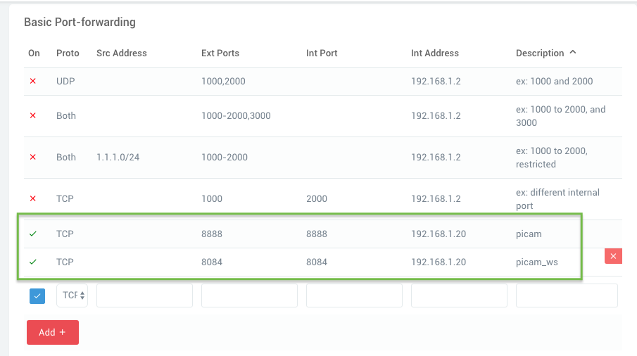
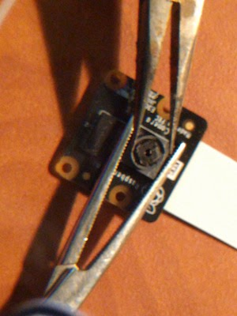
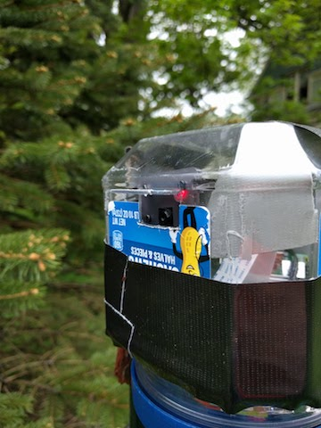
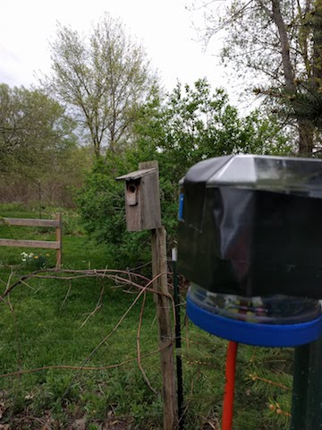

Streaming birdcam with a Raspberry Pi and picamera
Posted on Fri 04 May 2018 in Making
My darling wife got me a Raspberry Pi 3B+ and a NOIR Pi camera for my birthday so that I could set up a streaming camera to monitor our nesting bluebirds. Here's how I did it.
 My first attempt was to use the Motion program as described by Hackernoon. It worked, but the resulting video stream was very slow and jerky. I'd say I was getting only a few frames a second at best. I knew I could do better.
My first attempt was to use the Motion program as described by Hackernoon. It worked, but the resulting video stream was very slow and jerky. I'd say I was getting only a few frames a second at best. I knew I could do better.
Picamera
The better solution turned out to be picamera. This is a Python module for using the Raspberry Pi camera. The author has not only written a fantastic library, but he's also provided lots of great recipes (sample scripts) showing how to use it.
His pistreaming recipe looked to be perfect for my needs. Raspbian Stretch comes with Python installed. So I jumped right into the pistreamer install steps described on the pistreaming GitHub site.
The setup was quite simple and within just a few minutes I had the script running. It streamed much faster than Motion. I just needed to get this streaming across the web and I would be good to go.
Houston, we have a problem
I hit a little snag at this point. While I could access the stream just fine from the Pi itself, I could not do so from another computer on my local network. I found that I could access the pistreaming page if I connected the Pi to my network over Ethernet. It had to be something with my wifi connection.
Eventually I discovered that my Asus router or the Tomato firmware I run on it was blocking Wireless Multicast Routing, meaning that it was not allowing RTP/RTSP streaming between wifi nodes. Once I enabled that option, I could access the stream from my laptop.
Streaming to the internet
Streaming to the internet involved a couple of changes. First, I had to enable Port Forwarding in my router's admin tool:

Note: Make sure you use the IP addresses of your Pi, not those in my screenshot. You'll also notice that I set a custom port for the stream (8888 rather than the default 8082). Make sure you use the port your copy of pistreaming is set up to use.
According to a closed issue on the pistreaming repo, I needed to modify the script's index.html file. That file includes a hard-coded LAN address for the stream's address. It needs to be modified to use your public IP, which is the one your ISP gives you. You can do a Google search for "what's my IP" to find that address.
Then, update index.html, changing the var client line near the bottom like this:
1 2 | // change the var client line (at the bottom) to be:
var client = new WebSocket('ws://your_external_ip_address:${WS_PORT}/');
|
Make sure you have the quotes right on that. There are few quotes in there to start and you end up with two single quotes around everything between the parentheses.
Streaming on startup
I wanted the streaming server to start up automatically when the Pi booted up. To do this, I modified /etc/rc.local to run the server.py script. Keep in mind that scripts run by system processes like this don't have access to the same environment as you would have at a terminal prompt. When auto-running scripts like this, you have to use full (absolute) paths to python and your script.
Here are my steps for this:
- First, I found the path to python with
which python3 - Then, I opened the file in nano (
sudo nano /etc/rc.local) - At the end of the file, right before the
exit 0line, I added:/path/to/python3 /home/pi/pistreaming/server.py &
Note that the&at the end runs the script in the background so that it will keep running once rc.local exits. - Then,
Ctrl + oto save andCtrl + xto exit nano.
I had one more change to make, again related to absolute paths. I had to modify server.py so it could find the index.html and jsmpg.js files when run by rc.local. The relative paths it used didn't work until I updated the class StreamingHttpServer class definition follows:
1 2 3 4 5 6 7 8 9 10 11 12 | class StreamingHttpServer(HTTPServer):
def __init(self):
# I added this line
cwd = os.path.dirname(os.path.realpath(__file__))
super(StreamingHttpServer, self).__init__(
('', HTTP_PORT), StreamingHttpHandler)
# then modified this next line
with io.open(os.path.join(cwd, 'index.html'), 'r') as f:
self.index_template = f.read()
# this one too
with io.open(os.path.join(cwd, 'jsmpg.js'), 'r') as f:
self.jsmpg_content = f.read()
|
And with that, I was done. A quick reboot of the Pi and a check and sure enough it was streaming away.
Lighting the way
The inside of a birdbox is pretty dark, even during the day. From what I could find in the literature, birds see wavelengths between roughly 300 to 700 nm. That would mean a 940 nm IR LED would be outside their vision range but it would be visible to my NOIR (no infrared filter) Pi camera.
I used a 100 ohm resister and wired up the LED to pins 6 (ground) and 12 (Broadcom pin 18). I chose this pin because it's the PWM pin, which means if the LED is too bright, I can dim it by implementing pulse width modulation in a script rather than having to solder in a bigger resister.
Python on a Raspberry Pi comes with the RPi.GPIO library for accessing the pins. I happen to be using Berryconda (the Anaconda distribution for the Pi) which doesn't come with the library. But, it was a simple install with pip install RPi.GPIO. Here's my dead-simple script for turning on the LED.
1 2 3 4 5 6 7 | import RPi.GPIO as GPIO
ledPin = 18 # Pi pin 12 is Broadcom pin 18
GPIO.setmode(GPIO.BCM) # Use Broadcom pin-numbering mode
GPIO.setup(ledPin, GPIO.OUT) # LED pin set as output
GPIO.output(ledPin, GPIO.HIGH)
|
I saved that as led.py in my home directory. I updated rc.local to also run this script after starting the streaming server.
Focusing the camera
Finally, I had to adjust the focus of the camera. A bluebird box is roughly 9 inches tall and the nests are usually a few inches of packed grass and sticks. By default, the Pi camera is not in focus that close. But, you can change that.
To avoid breaking the camera lens assembly right off the board, you'll want to hold the square frame of the camera lens with one set of pliers. Then, use a pair of needle nose pliers to turn the inner lens to focus. I focused while watching the live stream until it was in focus at roughly 6 or 7 inches away.

Update 1
Sadly, the nest box that had four bluebird eggs is now empty. Something (a snake, raccoon, house sparrow, grackle, etc.) raided the box and took the eggs. I found a partial shell about 30 feet from the box, so I suspect another bird. As sad as it is, nest raiding is unfortunately common.
As luck would have it, we have a nest with eggs in the next box over. We think it is a Carolina Wren nest based on the shape, building materials, and egg coloration. Unfortunately, Carolina Wrens make deep nests such that there's no way to mount the camera inside the box like I'd do with bluebirds.

I went with a rather high-tech housing for the Pi, camera, and power supply. Everything fit inside an empty plastic nut container. I Gorilla-taped it to a metal garden stake. Ugly, but it works.

And aimed it at the house. We can watch the wrens come and go, which is definitely not as cool as seeing inside the box.
Update 2
The damn sparrows got the wrens too. Fortunately, a bluebird pair nested in another nearby box on our property. So far, they're safe and happily watching their eggs. Here's a brief look inside (recorded, not live).

Love them !